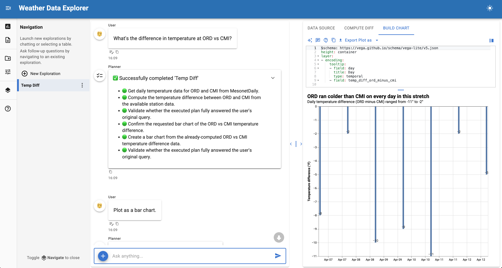

Building a Weather Data Explorer¶

Build a data exploration application that fetches weather observations from the Iowa Environmental Mesonet (IEM) using URL-based source controls.
This tutorial creates a custom URLSourceControls subclass that lets users select weather stations, date ranges, and networks through a simple interface.
Final result¶
A chat interface that fetches daily weather summaries from ASOS/AWOS stations and lets users explore temperature, precipitation, and wind data through natural language queries.
Time: 15-20 minutes
What you'll build¶
A URL-based source control that fetches weather data from the IEM API with automatic parameter preprocessing. The tutorial follows three steps:
- Start with a minimal example - Build a basic URL control with ~40 lines of runnable code
- Understand URL template interpolation - Learn how class-level params map to URL placeholders
- Add preprocessing - Override
_fetch_datato handle user input variations
For a detailed reference on source controls, see the Source Controls documentation.
Why URLSourceControls?¶
When your data source is a REST API with query parameters, URLSourceControls provides a declarative pattern:
- Declare params as class attributes - They automatically become UI widgets
- Define a URL template - Parameter values are interpolated at fetch time
- Override for preprocessing - Transform user input before the API call
This is simpler than BaseSourceControls when you just need to fetch from a URL with parameters.
Prerequisites¶
Install the required packages:
1. Minimal runnable example¶
Copy this complete example to mesonet_explorer.py and run it with panel serve mesonet_explorer.py --show:
- URL template with
{param_name}placeholders matching the class attributes below - String parameter - renders as a text input
- Selector parameter - renders as a dropdown menu
- CalendarDate parameter - renders as a date picker
This ~45 line example is immediately runnable. Try clicking "Sources" in the sidebar, selecting a network and date range, then clicking "Fetch Data".
Once the data loads, you can ask questions like:
- "What was the highest temperature recorded?"
- "Show me a chart of daily high and low temperatures"
- "Which day had the most precipitation?"
2. Understanding URL template interpolation¶
The key insight is that class-level param attributes become both UI widgets and URL parameters.
How it works¶
When the user clicks "Fetch Data", URLSourceControls:
- Collects parameter values from the widgets
- Interpolates them into
url_templateusing Python'sstr.format() - Downloads the result and parses it as CSV, JSON, or Parquet
For example, with these values:
stations = "SEA"network = "WA_ASOS"sts = 2024-01-01ets = 2024-01-07
The URL becomes:
https://mesonet.agron.iastate.edu/cgi-bin/request/daily.py?stations=SEA&network=WA_ASOS&sts=2024-01-01&ets=2024-01-07&format=csv
Parameter types and widgets¶
| Param type | Widget rendered | Example |
|---|---|---|
param.String |
Text input | Station codes |
param.Selector |
Dropdown | Network selection |
param.Integer |
Number input | Year |
param.CalendarDate |
Date picker | Start/end dates |
param.Boolean |
Checkbox | Include metadata |
3. Adding preprocessing¶
The IEM API uses 3-letter FAA station codes (like SEA for Seattle), but users often enter 4-letter ICAO codes (like KSEA). We can handle this by overriding _fetch_data:
Now users can enter either SEA or KSEA and both will work correctly.
When to override _fetch_data¶
Override _fetch_data when you need to:
- Transform user input - Normalize codes, convert units, validate ranges
- Add computed parameters - Calculate values based on other params
- Handle API quirks - Modify parameters for specific API requirements
- Add custom error handling - Check for specific error conditions
Full example¶
Here's the complete implementation with preprocessing and improved labels:
Understanding the data¶
The IEM daily summary includes these columns:
| Column | Description |
|---|---|
station |
Station identifier |
day |
Date of observation |
max_tmpf |
Maximum temperature (F) |
min_tmpf |
Minimum temperature (F) |
precip |
Precipitation (inches) |
avg_sknt |
Average wind speed (knots) |
max_sknt |
Maximum wind speed (knots) |
Try asking questions like:
- "What was the temperature range for each day?"
- "Create a line chart of max and min temperatures over time"
- "Which day had the strongest winds?"
- "Calculate the total precipitation for the week"
Next steps¶
Extend this example by:
- Add more networks - Include all 50 state ASOS networks
- Add hourly data - Create a separate control for hourly observations
- Combine with other sources - Join weather data with your own datasets
- Add custom analyses - Create specialized weather visualizations
See also¶
- Source Controls — Complete guide to creating custom controls
- Census Data Explorer — BaseSourceControls tutorial with dynamic options
- Agents — Configuring SourceAgent and other agents